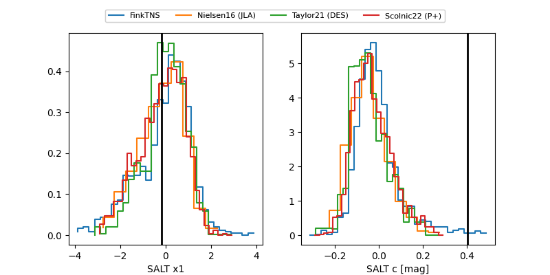

FINK: ZTF25ablgkgi
Lasair: ZTF25ablgkgi
ALeRCE: ZTF25ablgkgi
TNS: 2025vef
YSE: 2025vef
ZTF25ablgkgi (ztf,fink)
2025vef (tns,yse)
equatorial (ra, dec) = (21.3044,+1.98459)
galactic (l, b) = (139.8812,-59.77090)

last ztfg=19.68, ztfr=18.36
9 ztfg, 10 ztfr detections